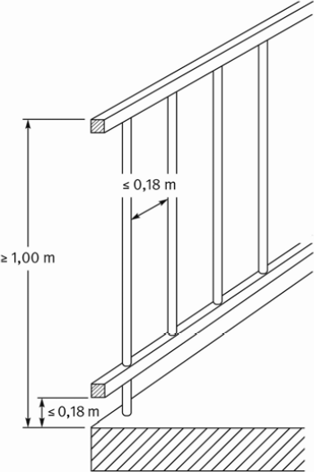
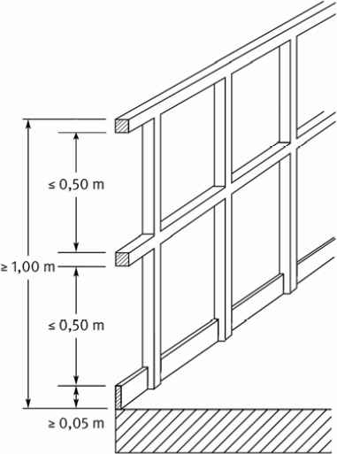
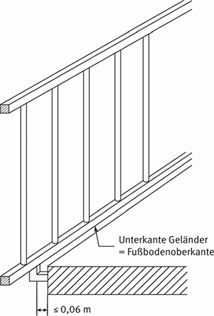

(1) Umwehrungen müssen entsprechend der Nutzung so gestaltet sein, dass sie den zu erwartenden Belastungen standhalten und ein Hinüber- oder Hindurchfallen von Beschäftigten verhindern. Bewegliche Teile der Umwehrungen dürfen nur aus der Schutzstellung gebracht werden, wenn dieses betrieblich erforderlich ist und andere Schutzmaßnahmen getroffen sind. Sie müssen in der Schutzstellung gesichert werden können und dürfen sich nicht in Richtung des Absturzbereiches öffnen lassen.
(2) Die Umwehrungen müssen mindestens 1,00 m hoch sein. Die Höhe der Umwehrungen darf bei Brüstungen bis auf 0,80 m verringert werden, wenn die Tiefe der Umwehrung mindestens 0,20 m beträgt und durch die Tiefe der Brüstung ein gleichwertiger Schutz gegen Absturz gegeben ist.
Beträgt die Absturzhöhe mehr als 12 m, muss die Höhe der Umwehrung mindestens 1,10 m betragen.
Ergibt sich bei der Gefährdungsbeurteilung, dass in bestehenden Arbeitsstätten die Einhaltung der Höhe der Umwehrung mit Aufwendungen verbunden ist, die offensichtlich unverhältnismäßig sind, so hat der Arbeitgeber dies individuell zu beurteilen. Bei der Gefährdungsbeurteilung hat der Arbeitgeber zu prüfen, wie durch andere oder ergänzende Maßnahmen die Sicherheit und der Gesundheitsschutz der Beschäftigten in vergleichbarer Weise gesichert werden kann; die erforderlichen Maßnahmen hat er durchzuführen. Eine solche Maßnahme kann z. B. die Zugangsbeschränkung zur Absturzkante sein. Die ergänzenden Maßnahmen können solange herangezogen werden, bis die bestehenden Arbeitsstätten wesentlich umgebaut werden.
(3) Wenn für die Umwehrung Geländer verwendet werden, müssen diese:
(4) Bei Füllstabgeländern mit senkrechten Zwischenstäben darf deren lichter Abstand nicht mehr als 0,18 m betragen. Der Abstand zwischen der Unterkante der Umwehrung bis zur Fußbodenoberkante darf 0,18 m nicht überschreiten (siehe Abb. 2).
Hinweis:
Bei Gebäuden, in denen mit dauernder oder häufiger Anwesenheit von Kindern gerechnet werden muss, können geringere Abstände erforderlich sein.

Abb. 2: Füllstabgeländer
(5) Bei Knieleistengeländern darf der Abstand zwischen Fuß- und Knieleiste, zwischen Knieleiste und Handlauf oder zwischen zwei Knieleisten nicht größer als 0,50 m sein. Die Fußleisten müssen eine Höhe von mindestens 0,05 m haben und unmittelbar an der Absturzkante angeordnet sein. (siehe Abb. 3)

Abb. 3: Knieleistengeländer
(6) Kann die Umwehrung bei vorgesetzten Füllstabgeländern nicht bündig mit der Absturzkante abschließen und entsteht dadurch nach außen hin ein Spalt, darf dessen lichte Breite (Abstand zwischen Absturzkante und Unterkante der Umwehrung) 0,06 m nicht überschreiten (siehe Abb. 4).

Abb. 4: Vorgesetztes Füllstabgeländer
(7) Die Umwehrungen müssen so beschaffen und angebracht sein, dass an ihrer Oberkante eine Horizontallast H = 1000 N/m aufgenommen werden kann. Abweichend genügt ein Lastansatz:
(1) Bodenöffnungen müssen gesichert sein:
(2) Abdeckungen, z. B. Luken-, Schacht-, Rutschen-, Gruben-, Falltüren, müssen so gestaltet und installiert sein, dass sich hierdurch keine Stolpergefahren ergeben und sie der Nutzungsart entsprechend tragfähig sein. Sie müssen sicher zu handhaben und gegen unbeabsichtigtes Bewegen (Auf- und Zuklappen, Verschieben) zu sichern sind. Diese Forderung ist z. B. dann erfüllt, wenn:
(3) Bewegliche Abdeckungen und Umwehrungen dürfen nur aus der Schutzstellung gebracht werden, wenn dies betrieblich erforderlich ist und andere Schutzmaßnahmen getroffen sind. Sie müssen in der Schutzstellung gesichert werden können und dürfen sich nicht in Richtung der Absturzkante öffnen lassen.
(1) Wandöffnungen müssen fest angebrachte oder bewegliche Umwehrungen haben, wenn:
Umwehrungen können z. B. aus verschieb- oder schwenkbaren Schranken, Schleusengeländern oder Halbtüren bestehen. Sie müssen mit einer Sicherung gegen unbeabsichtigtes Öffnen oder Ausheben versehen sein.
(2) Umwehrungen dürfen sich nicht zur tiefer liegenden Seite hin öffnen lassen.
Arbeitsplätze und Verkehrswege, bei denen der Abstand mehr als 2,0 m zur Absturzkante beträgt, liegen außerhalb des Gefahrenbereichs Absturz. Der Gefahrenbereich ist durch geeignete Maßnahmen, z. B. Ketten oder Seile, und gut sichtbare Kennzeichnung entsprechend ASR A1.3 "Sicherheits- und Gesundheitsschutzkennzeichnung" (Verbotszeichen D-P006 "Zutritt für Unbefugte verboten") gegen unbefugten Zutritt zu sichern. Bei Verkehrswegen ist als Schutzmaßnahme auch ausreichend, wenn die Abgrenzung optisch deutlich erkennbar ist.